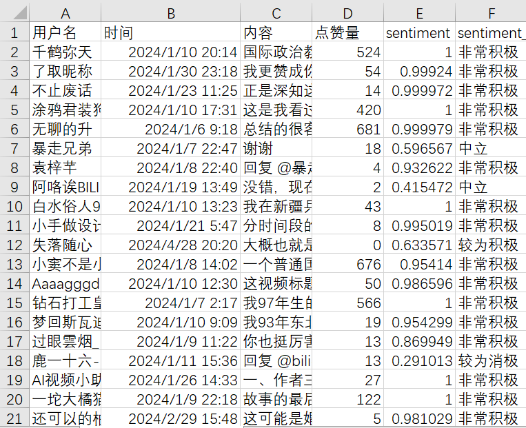
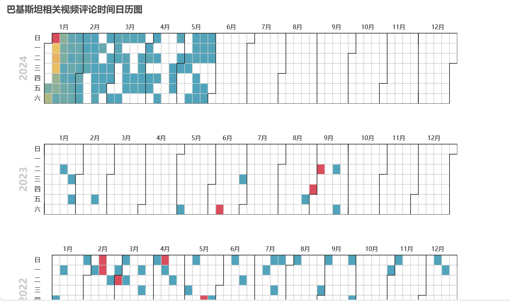
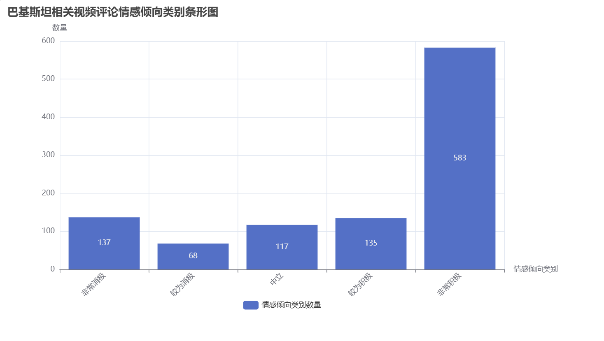
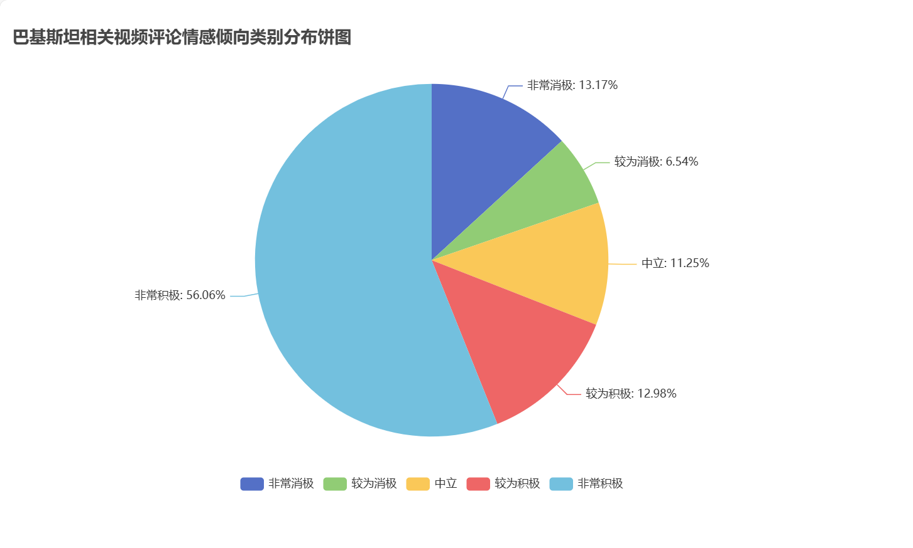
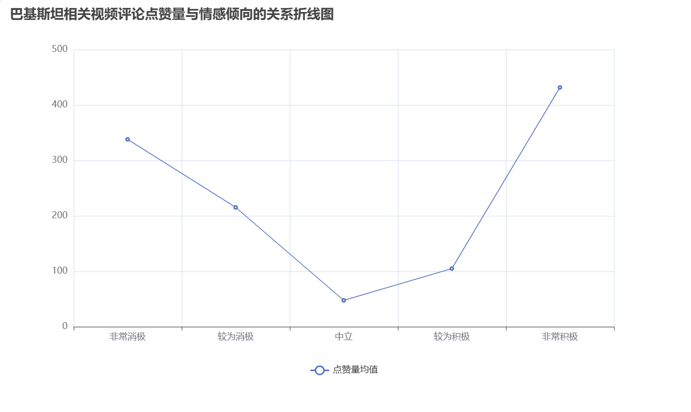
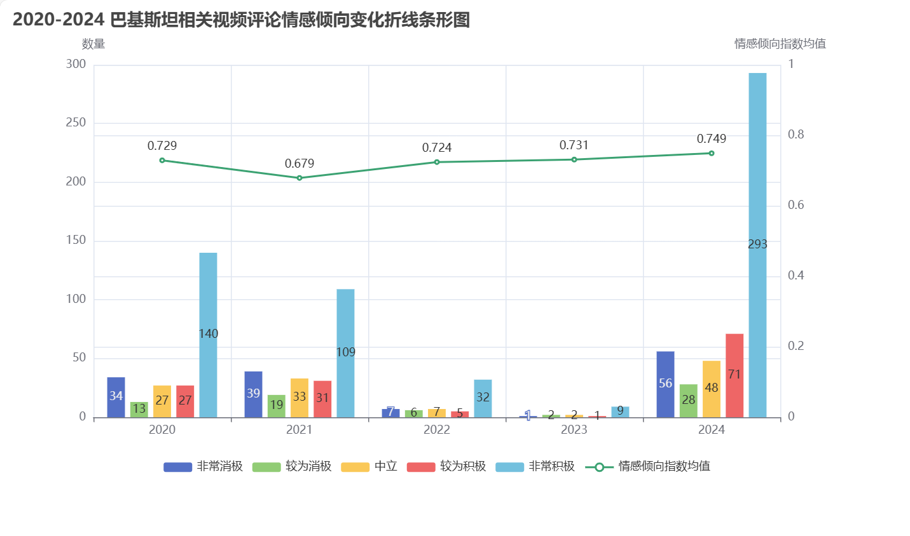
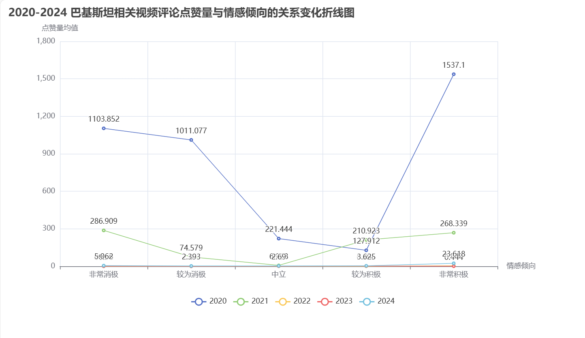

本项目在本人专业背景的基础上，综合应用python基础知识，爬取bilibili平台与巴基斯坦和中巴关系相关的三个视频的评论（包括评论和评论回复），对其进行情感倾向可视化分析。
爬虫部分用 selenium 进行，配合 cookies 手工登录的方式，抓取每条评论及其回复内容的用户名、评论内容、评论时间和点赞数量。爬虫视频由用户自行选取。
数据处理部分用 pandas 进行，包括情感倾向指数计算、分类、时间分类等。
情感倾向分析部分用 snownlp 进行，配合 jieba 分词技术，得出每条评论的情感倾向指数（评估情绪属性的数值，范围在 0-1，越接近1 情感越积极）。
可视化分析部分用 pycharts 进行，包括评论时间分析-日历图 calendar、情感分布-饼图 pie、评论内容-词云图 wordcloud、点赞量与情感倾向的关系-折线图 line、不同年份情感倾向分布-条形图 bar 等多样化的可视化处理。
《环游巴基斯坦100天，带你了解最真实的巴铁兄弟！》：https://www.bilibili.com/video/BV1YT4y1H7Fq/
《在巴基斯坦，中国人有多么受欢迎，请随时做好合影的准备！》：https://www.bilibili.com/video/BV1M44y1r7cS/
《骁话一下：巴基斯坦政治分裂拿中国开刀，巴铁真的铁吗？》：https://www.bilibili.com/video/BV1b54y127L2/
SnowNLP 的 sentiment 方法返回的是文本的情感极性值，它是一个介于 0 和 1 之间的浮点数，表示文本的情感倾向程度。值接近 0 表示负面情感； 值接近 1 表示正面情感。本项目将巴基斯坦相关视频评论区的评论内容情感倾向分为 5 类，0-0.2 为非常消极；0.2-0.4 为较为消极；0.4-0.6 为中立；0.6-0.8 为较为积极；0.8-1 为非常积极。
基于研究目的考虑，只保留了名词作为词云图样本，且去掉了一定的无意义停用词。根据图片结果，可以看出许多网民站在“国家”“利益”“朋友”等宏观角度观察中巴关系，同时倾向于联系中国和“印度”“美国”“俄国”“苏联”等其他国家的关系进行讨论， 讨论发散性强。此外，“女性”“共产主义”“农村”等话题也是这一层面中国网民普遍关注的。
评论时间主要受视频发布日期影响，本项目三个视频分别为 2020、2021、2024 年发布，故评论时间分布于 2020-2024 五年间，且间隔明显。
根据柱形图和饼图，对于中巴关系，中国网民大多抱有“非常积极”的态度，这一情感倾向占比显著领先于其他几项。但是占比第二的则是“非常消极”一项，这表明网民在这一话题的讨论上呈现一定的“极化”倾向， 在阐述观点时往往抱有非常鲜明的情感态度。
 这个部分主要考察网民更倾向于给抱有哪种情感态度的评论内容点赞。考察结果再次映证了网民的“极化”倾向，可以看出网民最喜欢点赞“非常积极”或“非常消极”的评论，对于“中立”态度的评论反而点赞最少。
这个部分将评论按年代进行分类，尝试分析不同年代的网民对这一话题情感态度的变化。分别罗列了不同年代不同情感类别的数量，以及平均情感倾向值的变化。受视频发布日期影响，部分年代样本量较少。根据 已有的数据，排除样本量的干扰因素外，平均值波动较小，可以看出网民对中巴关系的看法较为稳定，且整体上处于“较为积极”的类别。
这个部分将评论按年代进行分类，尝试分析不同年代的网民对更倾向于点赞哪种情感态度的评论。可以看出，无论在哪个年代，网民点赞都具有一定的极化倾向。
本项目选取涉及“中巴关系”和“巴铁”相关内容的三个bilibili视频评论作为样本，分析中国人民对巴总体印象及逐年变化过程。根据以上数据分析结果，可以得出以下结论：1、中国人民对中巴关系 整体上充满信心，认为巴基斯坦是中国的好伙伴。2、在评论情感倾向和点赞倾向上，网民都存在“极化”现象，更倾向于评论和点赞“非常积极”与“非常消极”的内容。3、相比于“就事论事”，网民倾向于 在思考中巴关系时联系其他国家，如美国、日本、俄国等，呈现发散性思维倾向。
总的来说，本项目实现了网络信息流抓取与可视化分析的功能，该功能可运用在多个领域。例如爬取国家相关视频可以分析中国人眼中某国的国际传播形象，爬取事件相关视频可以分析某个热点事件的舆论走向和大众情绪， 爬取人物视频可以分析公众人物的大众口碑等等。具体选择哪些视频评论作为研究样本，需要用户依据视频内容和具体评论情况进行选择。在学术研究和舆论监管中，这个功能都有较大的实用意义。
全部文件及代码已上传至本人github（https://github.com/hutingting20021120/...）bilibili_comment_crawl 文件夹。